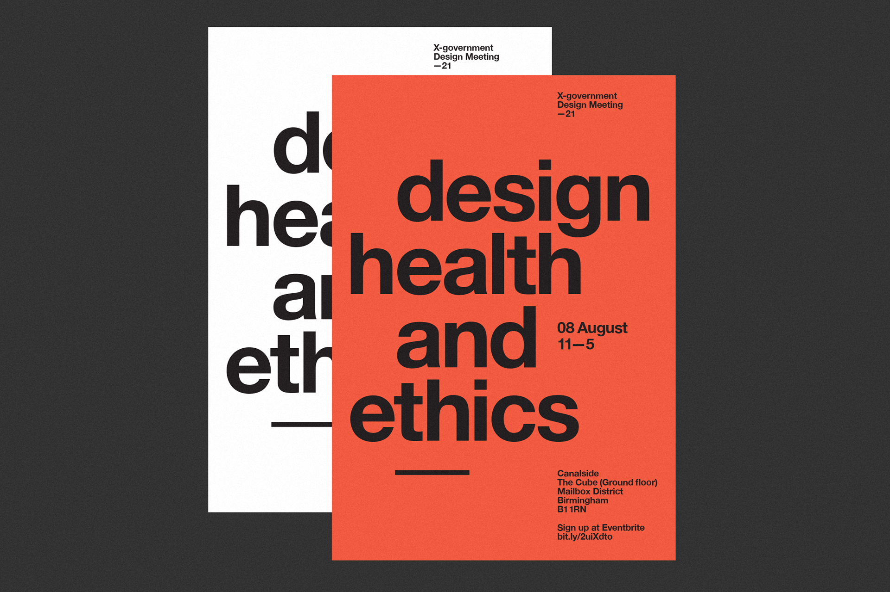

Most recent event which focused on equity in the design process
The cross-government design community contains hundreds of talented user-centred design specialists working in government organisations throughout the UK. This active community is in constant dialogue on platforms such as slack and email discussing design patterns and service delivery.
It's important to celebrate successes and keep the community active by digging into important topics in more detail. Every few months we run community events focused on specific themes in venues throughout the country (remote during the current pandemic). We have held events in venues such as the Design Museum and Conway Hall.
During these events we have a mixture of government based speakers and special guests who’s work specifically relates to the event theme. Over the years we have had great guest speakers such as Michael Beirut, Reginé Gilbert, Dan Hill, Anthony Burrill, George Aye and Ken Garland. We have covered important topics, none more so than the most recent event on ‘Equity in the design process’.
Poster for the event on design, health and ethics
Attendees at the event we held in the Design Museum
More posters for an unconference and an event on the theme of service lifecycles
Poster for a recent event on design and operations
Me speaking at a past community event